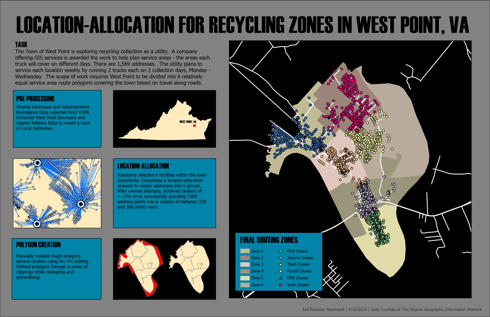
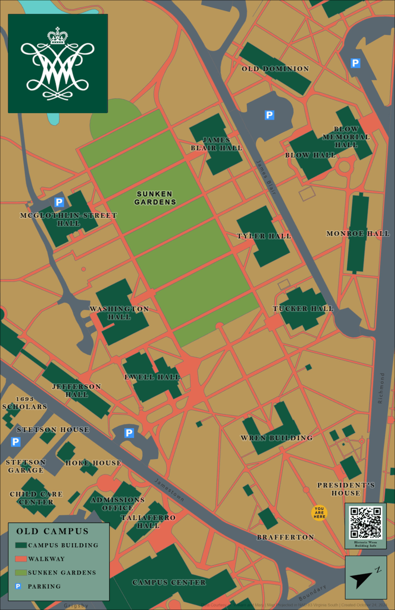
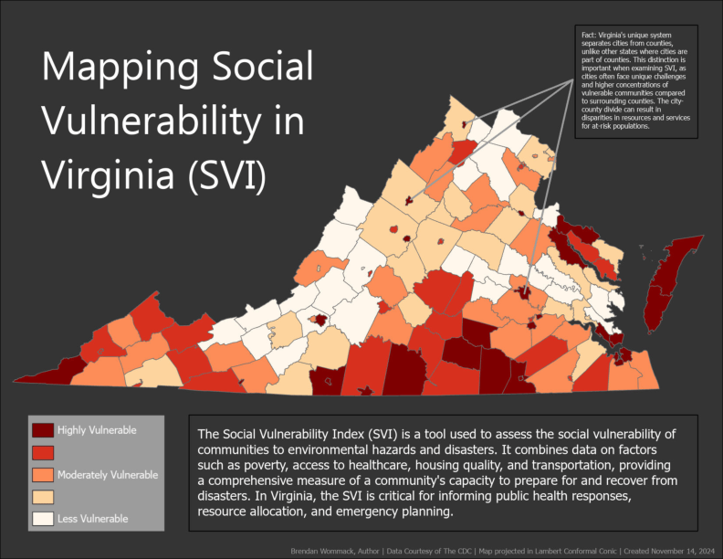
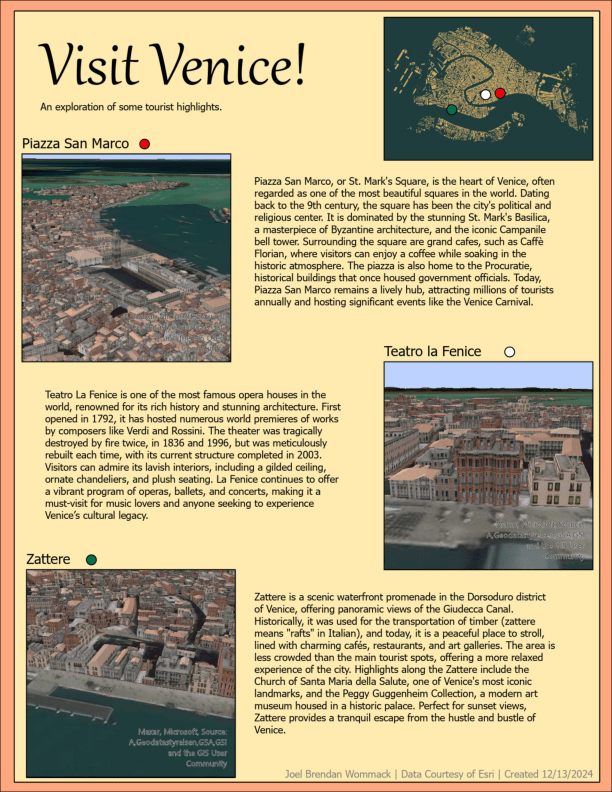
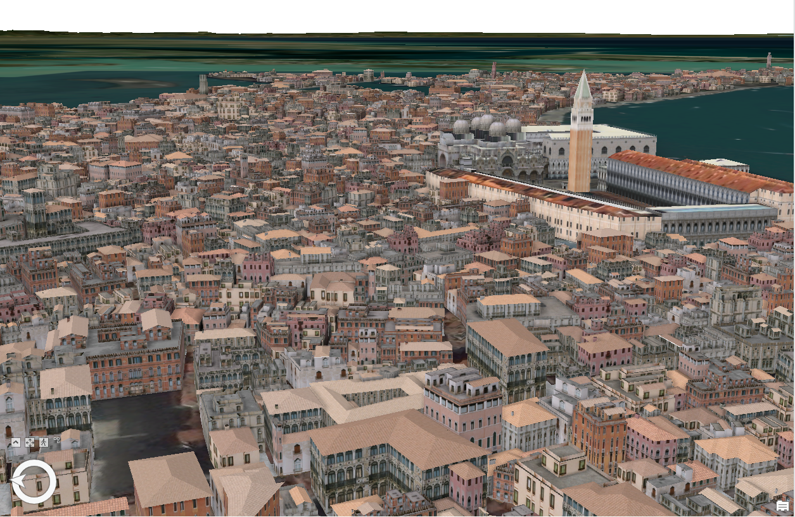
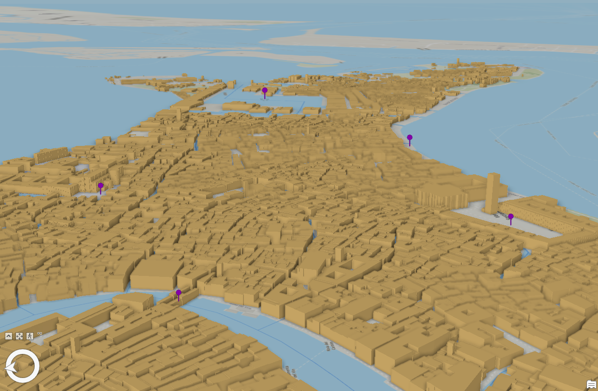
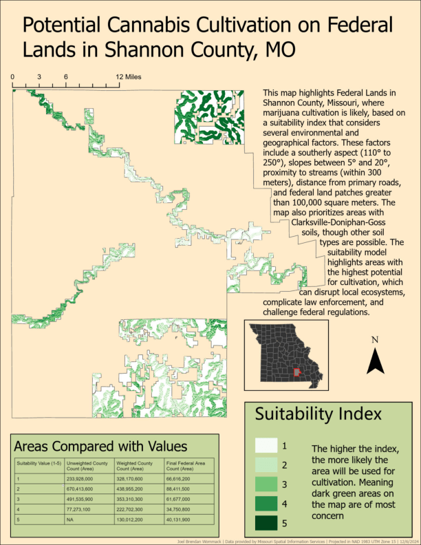
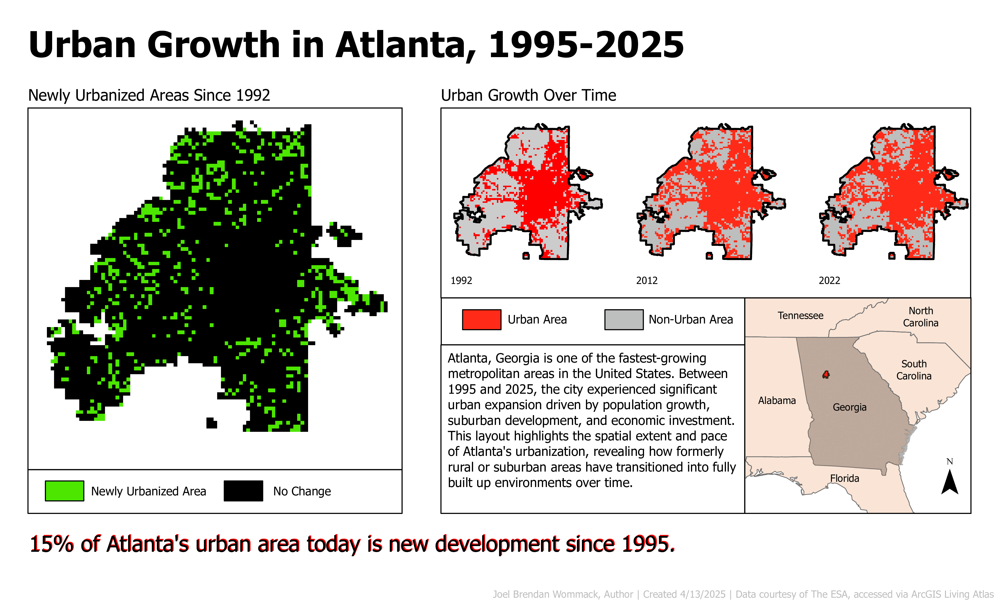

GIS Portfolio
This collection showcases some of my GIS work, including independent passion projects and work from my classes at the William and Mary Center for Geospatial Analysis.
Habitat Suitability Analysis

Service Area Analysis

Symbology and Labeling


Data Visualization

3D Mapping



Suitability Analysis

More...
